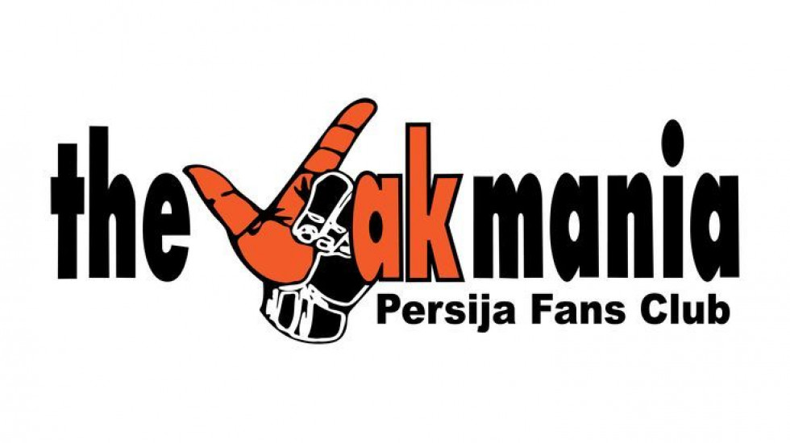

Sejarah
The Jakmania Didirikan pada tanggal 19 Desember 1997 oleh Muhammad Gunawan Hendromartono, yang lebih dikenal sebagai Gugun Gondrong, bersama sejumlah penggemar setia Persija Jakarta. Terbentuknya The Jakmania diawali dari kebutuhan untuk mengorganisir dukungan yang lebih terstruktur dan masif untuk Persija Jakarta, terutama ketika menghadapi era Liga Indonesia yang mulai profesional. Tujuan utama didirikannya The Jakmania adalah untuk memberikan dukungan yang positif dan sportif kepada Persija Jakarta dalam setiap pertandingan. Mereka ingin menciptakan suasana stadion yang meriah dan penuh semangat, yang diharapkan dapat memberikan motivasi tambahan bagi para pemain Persija. Selain itu, The Jakmania juga berusaha mengurangi perilaku negatif di kalangan suporter, seperti kekerasan dan vandalisme, dengan menanamkan nilai-nilai kebersamaan dan kesetiaan kepada klub. The Jakmania memiliki struktur organisasi yang rapi dan terkoordinasi. Ada pusat kepengurusan yang bertugas mengatur kegiatan dan kebijakan umum, serta koordinator wilayah yang mengorganisir anggota di berbagai daerah. Hal ini memungkinkan The Jakmania untuk bergerak secara efektif dan efisien dalam mendukung Persija, baik di kandang maupun tandang.
Sejak Didirikan, The Jakmania terus berkembang pesat. Mereka tidak hanya memiliki anggota yang berdomisili di Jakarta, tetapi juga di berbagai daerah lain di Indonesia. Apalagi ada komunitas The Jakmania di luar negeri yang tetap setia mendukung Persija Jakarta. Setiap tahunnya, jumlah anggota The Jakmania terus bertambah, menunjukkan betapa besarnya antusiasme dan kecintaan para suporter terhadap klub kebanggaan mereka. Selain memberikan dukungan di stadion, The Jakmania juga aktif dalam berbagai kegiatan sosial dan komunitas. Mereka sering mengadakan bakti sosial, seperti donor darah, bantuan bencana, dan kampanye lingkungan. The Jakmania juga terlibat dalam program-program pendidikan, seperti beasiswa untuk anak-anak kurang mampu, dan kampanye anti-narkoba. Semua ini menunjukkan bahwa The Jakmania bukan hanya sekedar kelompok suporter, tapi juga komunitas yang peduli terhadap lingkungan sosial mereka. The Jakmania memiliki identitas dan simbol yang kuat. Salah satu simbol yang paling dikenal adalah tangan dengan jari berbentuk huruf "J", yang melambangkan Jakmania. Warna oranye juga menjadi ciri khas mereka, yang sering terlihat di berbagai atribut dan merchandise yang mereka gunakan. Selain itu, mereka memiliki nyanyian dan yel-yel khas yang selalu dinyanyikan di setiap pertandingan, memberikan semangat dan motivasi bagi para pemain Persija. engan sejarah dan perkembangan yang begitu panjang, The Jakmania telah menjadi bagian penting dari perjalanan Persija Jakarta. Mereka tidak hanya memberikan dukungan di lapangan, tetapi juga memberikan kontribusi positif bagi masyarakat.